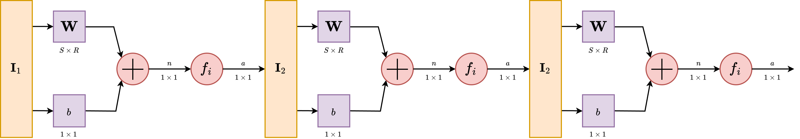

8 Extension 2 - A network layering structure
Now, let us consider the next evolution of the previous model of neuron structure. Previously, we have extended to multiple-input neuron, and now our neuron can effectively handle a lot of input data, which makes the encoding space of it larger than ever. However, when we construct it like that, we soon find a major roadblock - the blockage of processing.
While it is true that we have been able to process huge chunk of data, as there exists no hard limit on how many input can one simply get from, at least when the transformation \(\mathbb{R}^{n}\to\mathbb{R}^{m}\) is applied, hence \(n\to \infty\) is a possible scenario, the processing structure is limited. Indeed, we have only extended the neuron in the input side, of which we still rely on one singular interpreter, the transfer function block. With this come a major problem. Mathematically, any given \(f(x)\) considered of a functional expression can only work out a subspace cut or relation on the operating space. This is, by default the consequence of using function and function expression. Basically, the range of operation that you have is limited, and by said function in the transformation, you are only allowed to simulate a singular mapping relation on the operating space. With \(n\to \infty\), this increase losing information, problems with processing huge chunk, and so on. Indeed, the operational capacity is limited so much, that (Minsky and Papert 1988) argued concretely that a singular multiple-input neuron will not be able to solve a wide range of problems. What can be done to resolve this issue?
There are many ways to resolve this issue, indeed, but one of it remains until this very day. It is by organizing into layers, as seen in the concept of a multilayer perceptron (Rosenblatt 1958). Multilayer perceptron embodies the notion of parallel computing, of which comprised inputs and processes from multiple neurons into a net of responses. In Rosenblatt case, the paper used the setup of \(\alpha, \beta\) and \(\gamma\) systems.

Let us then proceed with the content. A single-layer network consists of \(S\) neurons, where each of the \(R\) inputs is connected to each of the neurons. We call this type of connection as fully-connected, or totally dense connections.

The layer, in its operational form, includes the weight matrix, the summer, the bias vector \(b\), the transfer function in general, and the output vector \(a\). In the abbreviated notation, components of the same form are compressed to one, but each neuron has its own singular component handling such operations. Some authors refer to inputs as not a layer but just simply input ambient space, some refers to the inning layer as hidden layer and the begin-end layers as transparent, but we will refrain from such lexical argument of such.
Each element of the input vector \(\mathbf{I}_{1}\) is connected to each neuron through the weight matrix \(\mathbf{W}\). Each neuron then has a bias, \(b_{i}\), a summer, a transfer function \(f\) and an output \(a_{i}\). Taken together and in parallel, the outputs form the output vector \(\mathbf{a}\). It is also common for \(R \ne S\), and sometimes the dimension can be infinitely many. The advantage of fully-connected notion is then realized, as for the evenness of connections between them.
While we said that the abbreviated notation compress similar structure together in a form, there exists a question about will we have to only use one transfer function for all neurons in such layer. The answer is no, but also yes. Typically, one might want to use multiple transfer function. However, in such case, it retains the fact that each of those neurons above are independent of each other, and hence can be considered, in such case, a different ‘sublayer’ inside the layer itself. So, it is possible. However, modern day architectural design favours uniformity, as for computational optimization and so on, and usually, you will only see difference in transfer function on the layer scale, not per-neuron scale.
The input vector elements enter the network through the weight matrix \(\mathbf{W}\) which is as
\[ \mathbf{W} = \begin{bmatrix} w_{11} & w_{12} & \dots & w_{1R} \\ w_{21} & W_{22} & \dots & w_{2R} \\ \vdots & \vdots & \dots & \vdots \\ w_{S1} & w_{S2} & \dots & w_{SR} \end{bmatrix} \]
The row indices of the elements of matrix \(\mathbf{W}\) indicate destination neuron associated with the weight, while column indicates the source of the input for that weight.
8.1 Multiple layers
As for now, we can then finally stack them together. Because of the configuration assumed by the structure layer itself, you can only stack it forward - partially why we call it feed-forward network as it is so. Consider a network with several layers. Each of those layers now have their own weight matrix \(\mathbf{W}^{L}\), its own bias vector \(\mathbf{b}^{L}\), net input vector \(\mathbf{n}\) and output vector \(\mathbf{a}\). The notation is not shifted, components of such representation are still using the subscript, while layer-wise, we are using the superscript. Hence, \(W^{1}_{m,n}\) will be a typical notation for connections \(m\) on neuron \(n\) of layer \(1\).

A layer whose output is the network output is called the output layer. The other layers beside the input stream are called hidden layer. This term comes from the interpretation of a black box model, typically where only the input and output of a system matters. Multilayer networks are hence, as we said, a way to make it more powerful than both single layer network and single multiple input neurons. Indeed, there exists the universal approximation theorem, which can be stated of such.
Theorem 8.1 (Universal approximation theorem) We state that, for any continuous function \(f:[a,b]\to \mathbb{R}\) on real field, for any \(\epsilon>0\), there exists a neural network \(N\) with a single hidden layer, such that \[ |f(x)-N(x)|\leq \epsilon \] for all \(x\in D_{f}\).
Essentially, this theorem states that neural networks can approximate continuous functions to any desired degree of accuracy. It is to note, that even though it is said of such, fundamentally, there is no way to gauge, by UAT alone, when and how to reach such approximation. The proof is very elaborated, and contains many variations. As such, we would reserve this to a more suitable section.
At this point, the number of choices to be made in specifying a network may look overwhelming, so let us consider such. Because we work on the basis of a black box model, we determine the problem setting solely by the desired input and output of the problem itself. If there are to be \(n\) output, then at the end there must be \(n\) output neuron in accordance. If the problem is specified with \(m\) inputs, we also have to put \(m\) inputs there. The desired output shape and distribution shall also be used accordingly. This is particularly easy, since by the order of construction, we have an interchangeable transfer function at the end of any particular neural layer. Hence, if, for example, it is a problem of probabilistic gauging, then sigmoid can be used with \([0,1]\) represents probability. Thus, it is fairly easy, per specification required, to change the neural network per wills. The only hard thing is to gauge the hidden structure. By far, this is one of the many problems encountered of both machine learning and neural network design. What is the optimal or safe neural network structure hidden in-between input-output layer that specifies and do well on particular problem class? We have some ideas, but nothing conclusive. Even with UAT, it is fairly difficult to tell exactly what constitute such, and additionally, per Belkin et al. (2019), it is even more not so apparent what is the solution for this problem. For references to deep learning book, use (Goodfellow et al. 2016) as a concrete reference.